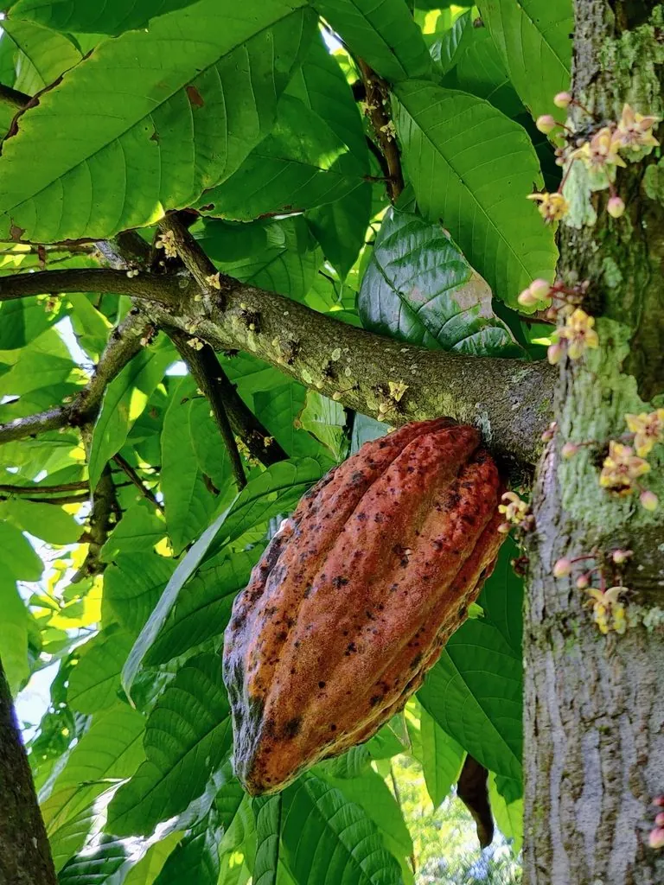

农作物与经济植物 · 植物界
可可 Theobroma cacao

可可的种子经发酵、烘焙后可制成可可粉和巧克力，是原产于美洲热带雨林的重要经济作物，被誉为“神的食物”。
- 分类
- 门被子植物门纲双子叶植物纲目锦葵目科锦葵科属可可属
- 栖息环境
- 赤道附近的热带雨林阴湿环境，喜高温高湿与半阴
- 地理分布
- 原产南美亚马孙流域，现主产于科特迪瓦、加纳、印尼等热带国家
- 保护级别
- 暂无评估（栽培作物）
物种志
可可是锦葵科常绿小乔木，株高 4–8 m，树皮灰褐色，叶片大而革质，卵状椭圆形，互生，长可达 30 cm。花小而精致，淡黄或粉白色，直接开在树干和老枝上，这种现象称为“老茎生花”。果实为荚果，长椭圆形，表面有纵沟，成熟时呈橙黄或紫红色，内含 20–50 粒扁椭圆形的种子，即可可豆，种子外裹白色果肉。
可可原产南美洲亚马孙河流域，玛雅和阿兹特克文明早在数千年前就用可可豆制作带苦味的饮料，可可豆甚至被当作货币；16 世纪传入欧洲后，加入糖和牛奶逐渐演变成巧克力。可可喜高温高湿、遮阴环境，多栽培于赤道附近的热带雨林地区，常与其他高大树种间作。可可豆经发酵、日晒、烘焙和研磨后制成可可粉与巧克力，其含有的可可碱和咖啡因有提神作用，西非的科特迪瓦、加纳是主要生产国。
形态与习性
- 株高4–8 m
- 叶大而革质，长可达 30 cm
- 花开在树干和老枝上，称老茎生花
- 果实荚果，内含 20–50 粒种子
- 原产地南美亚马孙河流域
- 主要成分可可碱与咖啡因
- 主要用途可可粉与巧克力
趣味知识
- 可可的花直接开在树干上，这种现象叫“老茎生花”。
- 玛雅和阿兹特克人曾把可可豆当作货币使用。
- 巧克力的香气来自可可豆的发酵和烘焙，新鲜的可可豆其实很苦。